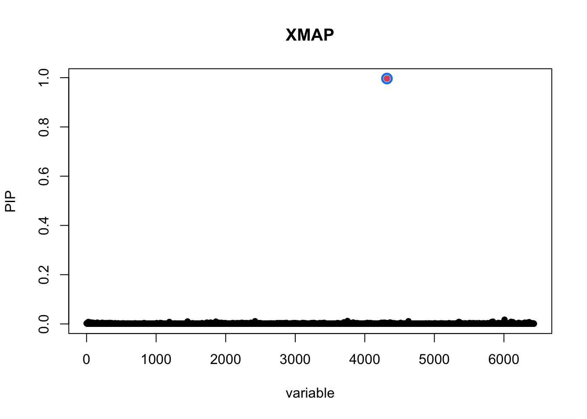
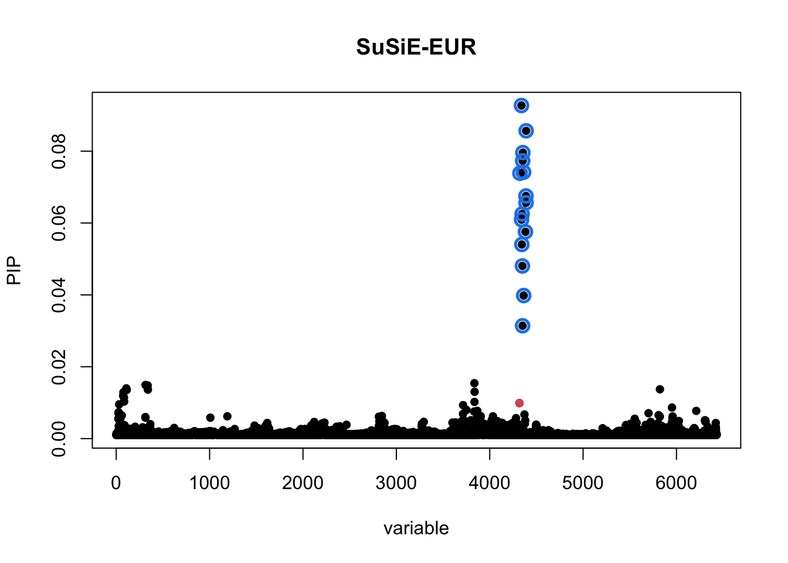
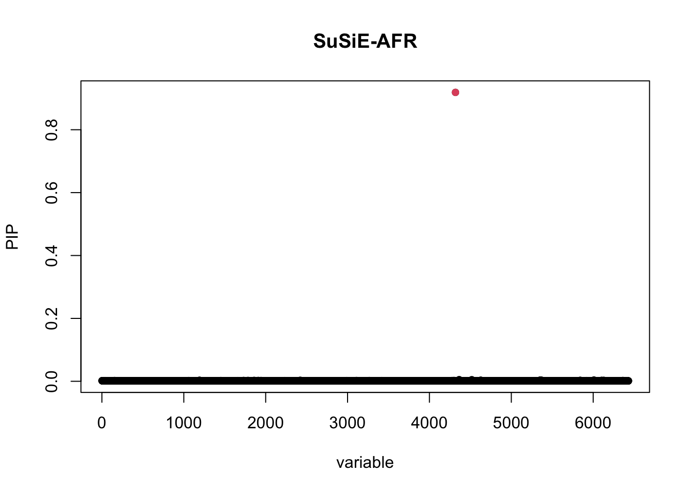

Last updated: 2024-04-30
Checks: 6 1
Knit directory: XMAP-tutorial/
This reproducible R Markdown analysis was created with workflowr (version 1.7.0). The Checks tab describes the reproducibility checks that were applied when the results were created. The Past versions tab lists the development history.
The R Markdown is untracked by Git. To know which version of the R
Markdown file created these results, you’ll want to first commit it to
the Git repo. If you’re still working on the analysis, you can ignore
this warning. When you’re finished, you can run
wflow_publish to commit the R Markdown file and build the
HTML.
Great job! The global environment was empty. Objects defined in the global environment can affect the analysis in your R Markdown file in unknown ways. For reproduciblity it’s best to always run the code in an empty environment.
The command set.seed(20230213) was run prior to running
the code in the R Markdown file. Setting a seed ensures that any results
that rely on randomness, e.g. subsampling or permutations, are
reproducible.
Great job! Recording the operating system, R version, and package versions is critical for reproducibility.
Nice! There were no cached chunks for this analysis, so you can be confident that you successfully produced the results during this run.
Great job! Using relative paths to the files within your workflowr project makes it easier to run your code on other machines.
Great! You are using Git for version control. Tracking code development and connecting the code version to the results is critical for reproducibility.
The results in this page were generated with repository version 36aec62. See the Past versions tab to see a history of the changes made to the R Markdown and HTML files.
Note that you need to be careful to ensure that all relevant files for
the analysis have been committed to Git prior to generating the results
(you can use wflow_publish or
wflow_git_commit). workflowr only checks the R Markdown
file, but you know if there are other scripts or data files that it
depends on. Below is the status of the Git repository when the results
were generated:
Ignored files:
Ignored: .DS_Store
Ignored: .Rhistory
Ignored: .Rproj.user/
Ignored: data/.DS_Store
Untracked files:
Untracked: analysis/LDL_TGP.Rmd
Untracked: data/xmap_susie_LDL_TGP.RData
Unstaged changes:
Modified: analysis/LDL.Rmd
Modified: analysis/_site.yml
Note that any generated files, e.g. HTML, png, CSS, etc., are not included in this status report because it is ok for generated content to have uncommitted changes.
There are no past versions. Publish this analysis with
wflow_publish() to start tracking its development.
We demonstrate how to fit XMAP with reference genotypes from publicly available reference genotypes. For illustration, we consider the LDL GWAS summary statistics from the full example, while using the 1000 Genomes data to construct EUR and AFR LD matrices. In the following, we introduce how to construct LD matrices from the 1000 Genomes data and fit XMAP with the constructed LD matrices step by step.
We first obtain GRCH37 1000 Genomes genotype files from plink and convert them to plink1 format.
plink2 \\
--autosome \\
--make-bed \\
--max-alleles 2 \\
--out all_phase3_noQC \\
--pfile all_phase3 \\
--rm-dup exclude-all \\
--snps-only just-acgt \\
--var-filterNext, we perform QC, extract EUR and AFR samples, and obtain the genotype files for the target chromosome (chromosome 8 here).
plink2 \\
--bfile all_phase3_noQC \\
--chr 8 \\
--hwe 1e-10 \\
--keep iid_EUR.txt \\
--maf 0.005 \\
--make-bed \\
--out all_phase3_EUR_chr8 \\
--var-filter
plink2 \\
--bfile all_phase3_noQC \\
--chr 8 \\
--hwe 1e-10 \\
--keep iid_AFR.txt \\
--maf 0.005 \\
--make-bed \\
--out all_phase3_AFR_chr8 \\
--var-filterOnce the plink files are ready, we can read summary statistics and extract SNPs from the summary data and reference genotype in the target region. Here, we focus on 20000001-23000001 in chromosome 8, which is present in our manuscript.
library(XMAP)
library(susieR)
library(data.table)
library(Matrix)
library(snpStats)
# read sumstats
sumstat_EUR <- fread("/Users/cmx/Documents/Research/Project/Fine_Mapping/sumstats/LDL_allSNPs_UKBNealLab_summary_format.txt")
sumstat_AFR <- fread("/Users/cmx/Documents/Research/Project/Fine_Mapping/sumstats/LDL_AFR_GLGC_summary_format.txt")
# read genotype information
bim_EUR <- fread("/Users/cmx/Documents/Research/Data/GWAS/Genotype/all_phase3_EUR_chr8.bim")
bim_AFR <- fread("/Users/cmx/Documents/Research/Data/GWAS/Genotype/all_phase3_AFR_chr8.bim")
# detect allele ambiguous SNPs
idx_amb_EUR <- (bim_EUR$V5 == comple(bim_EUR$V6))
idx_amb_AFR <- (bim_AFR$V5 == comple(bim_AFR$V6))
# identify overlapping SNPs on region chr8_20000001_23000001
snps <- Reduce(intersect, list(bim_AFR$V2[!idx_amb_AFR & bim_AFR$V4 > 20000001 & bim_AFR$V4 < 23000001], bim_EUR$V2[!idx_amb_EUR], sumstat_AFR$SNP, sumstat_EUR$SNP))
# read genotype matrices
geno_EUR <- read.plink("/Users/cmx/Documents/Research/Data/GWAS/Genotype/all_phase3_EUR_chr8.bed")
X_EUR <- as(geno_EUR$genotypes, "numeric")
X_EUR_i <- X_EUR[,match(snps, bim_EUR$V2)]
geno_AFR <- read.plink("/Users/cmx/Documents/Research/Data/GWAS/Genotype/all_phase3_AFR_chr8.bed")
X_AFR <- as(geno_AFR$genotypes, "numeric")
X_AFR_i <- X_AFR[,match(snps, bim_AFR$V2)]
bim_EUR_i <- bim_EUR[match(snps, bim_EUR$V2), ]
bim_AFR_i <- bim_AFR[match(snps, bim_AFR$V2), ]
# align genotype alleles using EUR as reference
idx_flip <- which(bim_AFR_i$V5!=bim_EUR_i$V5 & bim_AFR_i$V5!=comple(bim_EUR_i$V5))
# flip allels in AFR genotypes
X_AFR_i[,idx_flip] <- 2 - X_AFR_i[,idx_flip]
# compute LD matrices
R_EUR <- cor(X_EUR_i)
R_AFR <- cor(X_AFR_i)The R_EUR and R_AFR constructed above will
be used for fitting XMAP in the subsequent analysis. We also extract
SNPs from summary data for the target region and flip alleles in the
summary data to match the reference genotype.
# extract target region snps from sumstats data
sumstat_AFR_i <- sumstat_AFR[match(snps, sumstat_AFR$SNP), ]
sumstat_EUR_i <- sumstat_EUR[match(snps, sumstat_EUR$SNP), ]
# flip alleles in sumstats
z_afr <- sumstat_AFR_i$beta / sumstat_AFR_i$se
z_eur <- sumstat_EUR_i$Z
idx_flip <- which(sumstat_AFR_i$A1 != bim_EUR_i$V5 & sumstat_AFR_i$A1 != comple(bim_EUR_i$V5))
z_afr[idx_flip] <- -z_afr[idx_flip]
idx_flip <- which(sumstat_EUR_i$A1 != bim_EUR_i$V5 & sumstat_EUR_i$A1 != comple(bim_EUR_i$V5))
z_eur[idx_flip] <- -z_eur[idx_flip]With the LD matrices R_EUR and R_AFR, and
the summary statistics z_eur and z_afr, we can
fit XMAP to obtain the causal SNPs and credible sets. Here, we set the
number of causal SNPs to 10. We set the C1 and
C2 values to the estimated LDSC intercepts. Details can be
found at the
step 1 in the full example.
# LDSC intercepts
c1 <- 1.066501
c2 <- 1.095526
# fit XMAP
xmap <- XMAP(simplify2array(list(R_EUR, R_AFR)), cbind(z_eur, z_afr), n=c(median(sumstat_EUR_i$N), median(sumstat_AFR_i$N)),
K = 10, Omega = OmegaHat, Sig_E = c(c1, c2), tol = 1e-6,
maxIter = 200, estimate_residual_variance = F, estimate_prior_variance = T,
estimate_background_variance = F)
cs1 <- get_CS(xmap, Xcorr = R_AFR, coverage = 0.9, min_abs_corr = 0.1)
cs2 <- get_CS(xmap, Xcorr = R_EUR, coverage = 0.9, min_abs_corr = 0.1)
cs_xmap <- cs1$cs[intersect(names(cs1$cs), names(cs2$cs))]
pip_xmap <- get_pip(xmap$gamma)
plot_CS(pip_xmap, cs_xmap, main = "XMAP",b = (bim_EUR_i$V2 == "rs900776")) For comparison, we also fit SuSiE with AFR and EUR data separately and plot the credible sets.
susie_EUR <- susie_rss(z=z_eur,R=R_EUR,n=median(sumstat_EUR_i$N))
susie_plot(susie_EUR,y="PIP",b = (bim_EUR_i$V2 == "rs900776"))
susie_AFR <- susie_rss(z=z_afr,R=R_AFR,n=median(sumstat_AFR_i$N))
susie_plot(susie_AFR,y="PIP",b = (bim_EUR_i$V2 == "rs900776"))
In this example, we used publicly available data from 1000 Genomes Project to construct the LD matrices for EUR and AFR populations. However, the LD matrices constructed from the reference data may produce unreliable results in fine-mapping. In practice, we recommend using the in-sample genotype data to construct the LD matrices for the target population. One can follow the above steps to construct their own LD matrices and fit XMAP with the in-sample genotype data.
sessionInfo()R version 4.1.2 (2021-11-01)
Platform: aarch64-apple-darwin20 (64-bit)
Running under: macOS 13.6.3
Matrix products: default
BLAS: /opt/homebrew/Cellar/openblas/0.3.19/lib/libopenblasp-r0.3.19.dylib
LAPACK: /Library/Frameworks/R.framework/Versions/4.1-arm64/Resources/lib/libRlapack.dylib
locale:
[1] en_US.UTF-8/en_US.UTF-8/en_US.UTF-8/C/en_US.UTF-8/en_US.UTF-8
attached base packages:
[1] stats graphics grDevices utils datasets methods base
other attached packages:
[1] susieR_0.12.35 XMAP_1.0
loaded via a namespace (and not attached):
[1] tidyselect_1.2.0 xfun_0.32 bslib_0.4.0 lattice_0.20-45
[5] colorspace_2.0-2 vctrs_0.6.3 generics_0.1.1 htmltools_0.5.4
[9] yaml_2.3.5 utf8_1.2.2 rlang_1.1.1 mixsqp_0.3-43
[13] jquerylib_0.1.4 later_1.3.0 pillar_1.9.0 glue_1.6.2
[17] matrixStats_0.61.0 lifecycle_1.0.3 plyr_1.8.6 stringr_1.4.1
[21] munsell_0.5.0 gtable_0.3.0 workflowr_1.7.0 evaluate_0.16
[25] knitr_1.40 fastmap_1.1.0 httpuv_1.6.5 irlba_2.3.5
[29] fansi_0.5.0 highr_0.9 Rcpp_1.0.10 promises_1.2.0.1
[33] scales_1.1.1 cachem_1.0.6 jsonlite_1.8.0 fs_1.5.2
[37] ggplot2_3.3.5 digest_0.6.29 stringi_1.7.8 dplyr_1.1.2
[41] rprojroot_2.0.2 grid_4.1.2 cli_3.6.1 tools_4.1.2
[45] magrittr_2.0.3 sass_0.4.2 tibble_3.2.1 crayon_1.5.1
[49] pkgconfig_2.0.3 Matrix_1.5-4.1 rmarkdown_2.16 reshape_0.8.8
[53] rstudioapi_0.13 R6_2.5.1 git2r_0.31.0 compiler_4.1.2